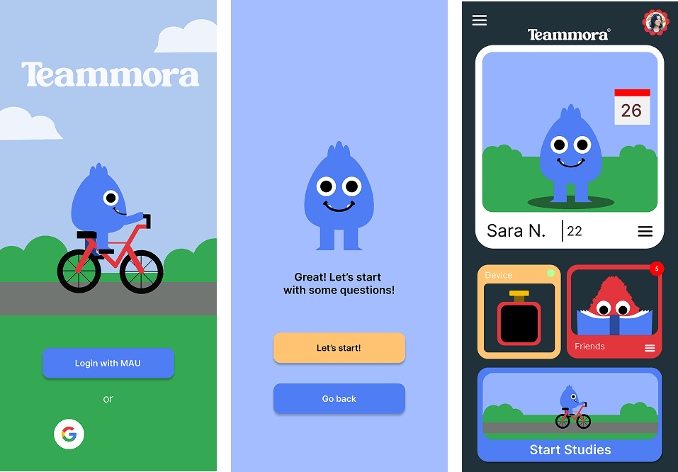
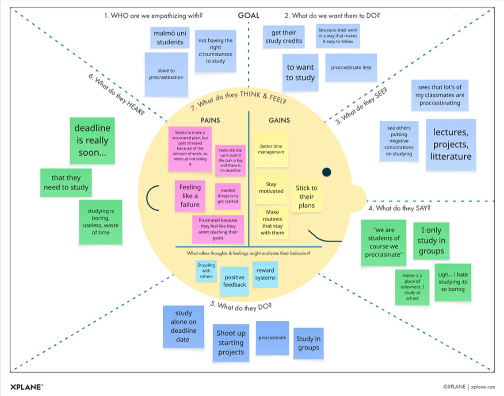
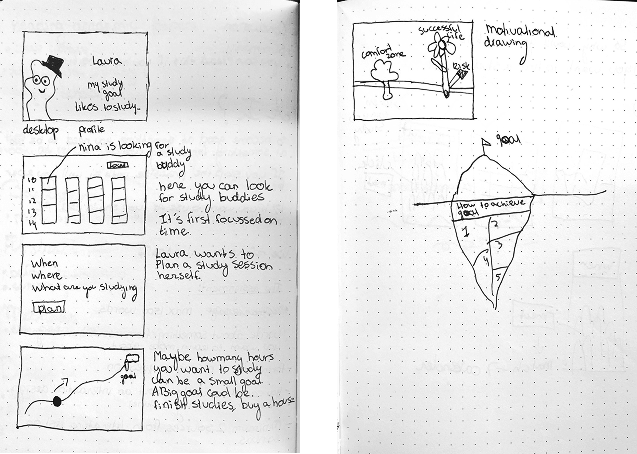
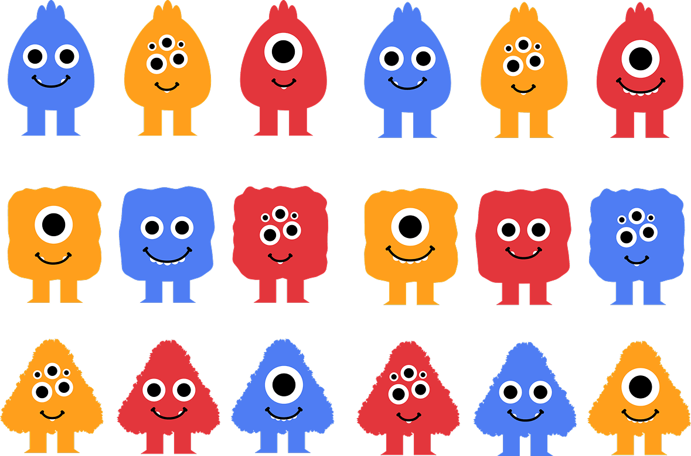

2026
Malmö University - Interaction Design
Althea, Diego, Erna, Veronica and me
While I was studying Interaction Design in Malmö (Sweden) we worked on a project
foccused on ideation. We had to come up with multiple ideas on how we could design something to help
procrastination. We explored why students procrastinate and how design could help them feel less
alone while studying. Through research, interviews, and iterative prototyping, we developed a
concept that combines social connection with playful motivation: a study app paired with a
customizable companion.

How might we help students inside the univeristy feel accompanied while studying alone?
After multiple round of ideation we designed a study meeting app combined with a digital “monster” companion that motivates students, tracks progress, and creates a sense of accountability and companionship.

We started by diving into the world of procrastination. Through desk research, we discovered concepts like the “panic monster” and methods such as mental contrasting with implementation intentions. These insights helped us understand that motivation isn’t just about discipline, but also about structure, mindset, and environment. During interviews, students were very honest. Procrastination felt almost like a shared identity: “we are students, of course we procrastinate.” But we also noticed something important, studying together, even without actively collaborating, made it easier to focus. That small sense of presence mattered more than we expected. We combined our research in an empathy map.

The ideation phase was chaotic but exciting. We filled pages with ideas:
a study app, a robot pet, a growing plant, gamified tasks, even a creature that would “survive” based on your progress.
Two ideas stood out:
- a meeting app to find study partners
- a companion that motivates you
Combining these led to our main concept: a social study platform with a personalized companion that grows with your effort.
Before going digital, we created paper prototypes to explore different directions quickly. Everyone visualized the idea differently, which helped us discuss what worked and what didn’t. By merging these perspectives, we built a clearer and more consistent concept. We then translated this into user flows and wireframes, focusing on making the experience simple and intuitive. The goal was not to overwhelm the user, but to gently guide them into starting.
The app allows users to: create a profile and study goals find or schedule study sessions with others track their progress through a calendar customize their own “monster” companion The companion grows stronger as the user studies more, creating a playful sense of responsibility and reward. It’s not about pressure, but about encouragement.
One of the most fun parts was designing the companion. Users can create their own version by choosing shapes, colors, and expressions. Over time, they unlock new features by studying. This turns productivity into something more tangible and personal, like taking care of something that grows with you.

Looking back, the process had many different directions, which made it challenging at times. It was easy to get lost in possibilities. But that was also where the strength of the project lay: constantly questioning, exploring, and refining. What I learned most is the importance of asking “why” at every step. Not just what we are making, but for whom and how it actually helps them. In the end, the project became less about solving procrastination completely, and more about making students feel supported while dealing with it.